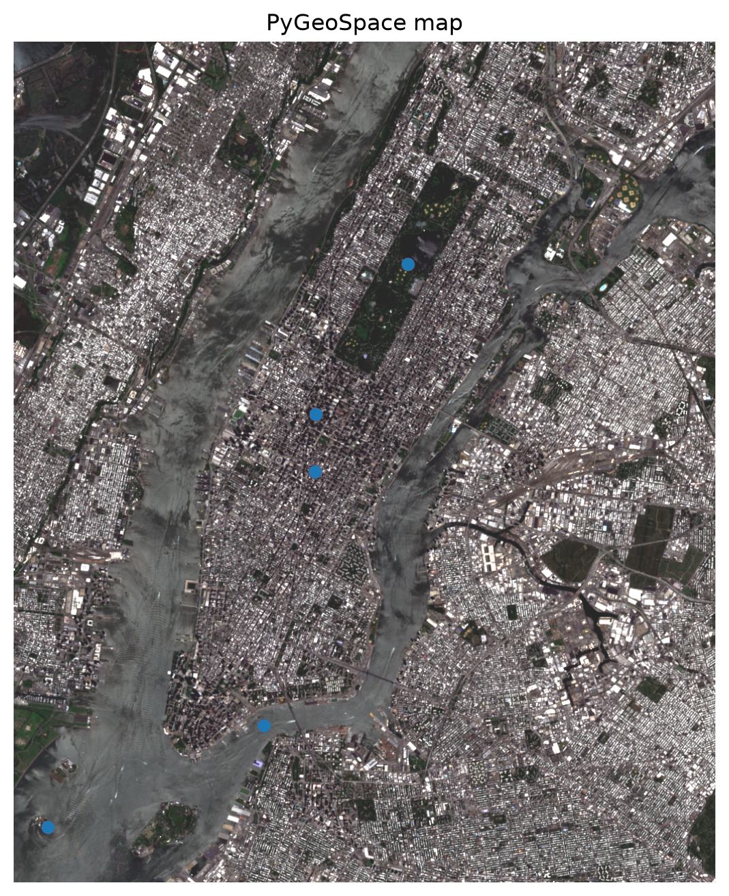
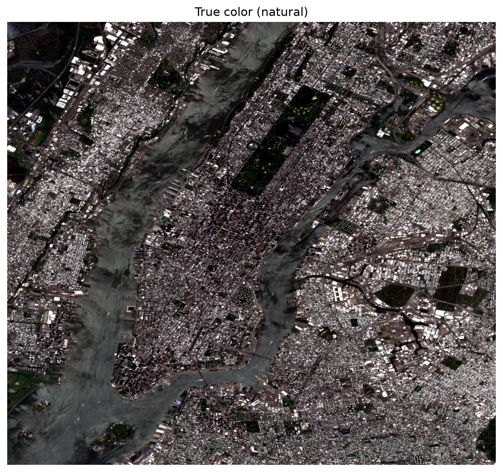
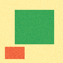
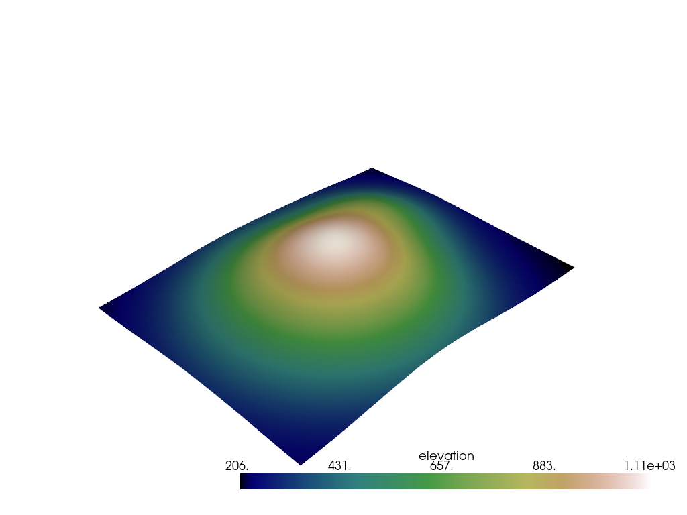

PyGeoSpace Documentation
A geospatial visualization toolkit for Python that spans 2D web maps, true 3D scenes, and an interactive 3D globe. Stack vector, raster and point-cloud layers; read a whole satellite scene in one call; run spectral and spatial analytics; and export a rich interactive map, a Cesium globe, a static image, or a real 3D model. No build step, no server, no access token required.
Vector via GeoPandas · rasters via rasterio · true 3D via PyVista · 2D maps via deck.gl · 3D globe via CesiumJS (token-free). Heavy backends are optional extras.
Up and running in 2 minutes
Build a 2D map from a GeoDataFrame, drape satellite imagery, or spin up a 3D terrain scene — each is a few chained calls. The API returns its objects so calls compose into one line.
map.html is a standalone interactive map with a full control suite — layer toggles, opacity sliders, a basemap switcher, navigation, a live scale bar, a coordinate readout, fullscreen and a legend. deck.gl loads from a CDN at view time; there's no server and no build step.Interactive demo — try the CLI
Pick a command and click Run to see the output it produces:
How PyGeoSpace fits together
One object holds everything: a Map created in "2d" or "3d" mode. You stack typed layers onto it with chainable add_* methods, optionally run analytics, then export — to an interactive HTML map, a static image, or a 3D model file.
Layers
Every layer derives from Layer. The four concrete types below are all implemented; add_layer() accepts a GeoDataFrame, a GeoSeries, or a path and picks the right draw type automatically.
| Layer | Status | Backed by |
|---|---|---|
VectorLayer | ✓ Implemented | GeoDataFrame / GeoJSON — points, lines, polygons |
RasterLayer | ✓ Implemented | NumPy array + transform/CRS (rasterio) |
PointCloudLayer | ✓ Implemented | XYZ points; 3D scene + LAS classification colors |
StreamLayer | ✓ Implemented | WebSocket / MQTT source |
Reading data
Vector data flows in through GeoPandas, so anything GeoPandas reads (Shapefile, GeoPackage, GeoJSON, KML, GPX, FlatGeobuf, GML) works. read_file() and detect_format() auto-detect by extension and magic bytes. Rasters are read with rasterio.
Rasters & imagery
add_raster() drapes a georeferenced raster on a 2D map as a deck.gl bitmap, reprojecting its bounds to lon/lat. Pass bands=[r,g,b] for a multi-band composite (true color, false-color IR, agriculture) or cmap= for a single-band colormap. Static save("img.png") renders the imagery itself, georeferenced, with any vector overlays on top.
.html) and static (.png/.pdf) export, and fit() frames the map to their extent.Spectral analysis
From a multi-band raster, compute normalized indices with spectral_index(layer, "ndvi") or the map-level calculate_index("ndvi", band_nir=4, band_red=3). Band order follows the convention blue=1, green=2, red=3, nir=4, swir=5.
| Index | Formula | Highlights |
|---|---|---|
ndvi | (NIR − Red) / (NIR + Red) | Vegetation health |
ndwi | (Green − NIR) / (Green + NIR) | Open water |
ndbi | (SWIR − NIR) / (SWIR + NIR) | Built-up area |
savi | soil-adjusted NDVI | Sparse canopy |
evi | enhanced vegetation index | Dense canopy |
The 3D engine
A Map(mode="3d") is a real PyVista scene that renders headlessly via an offscreen GL context. Build terrain from a DEM (add_terrain) or a meshgrid (add_surface), drop in a 3D point cloud (add_pointcloud_3d) or extruded polygons (add_extruded), drive a scriptable Camera3D, then render_3d() to PNG or export_3d() to an interactive HTML page or a model file.
3D Globe (CesiumJS)
Call save("globe.html", engine="cesium") (or to_cesium_html()) and the same map renders on an interactive 3D globe. Your vector layers become GeoJSON draped on the terrain; raster layers become georeferenced imagery overlays. Cesium's built-in scene-mode picker toggles between a 3D globe, a 2.5D Columbus view, and a flat 2D map — so one file visualizes the data three ways.
import pygeospace as pgs
m = pgs.Map(title="NYC")
m.add_layer(gdf, name="Landmarks")
m.add_composite(stack, "true_color")
m.save("globe.html", engine="cesium") # 3D globe, no token
# With premium terrain (optional):
# m.to_cesium_html(ion_token="…", terrain=True)
ion_token= unlocks Cesium World Terrain and premium imagery, but the open-imagery default works out of the box for users anywhere.Interactive HTML export
to_html() returns the map as a string; save(path) writes it and returns the resolved path. The 2D page ships with a control suite layered over the deck.gl canvas:
.png exports are fully offline.API Reference
Everything is importable from the top-level package. The center of gravity is Map; Camera3D drives 3D views, and the analytics functions live under pygeospace.analytics.
import pygeospace as pgs
from pygeospace import (Map, Camera3D, Layer, VectorLayer,
RasterLayer, PointCloudLayer, StreamLayer,
ViewState, read, read_file, read_bands,
find_scene_bands, detect_format)
from pygeospace.analytics.spectral import spectral_index, composite
At a glance
| Name | Kind | What it's for |
|---|---|---|
Map | class | 2D or 3D scene; the main entry point |
Camera3D | dataclass | Position / orbit / fly-through for 3D scenes |
VectorLayer · RasterLayer | classes | Typed layers you stack on a Map |
PointCloudLayer · StreamLayer | classes | 3D points and live data sources |
read_file() · detect_format() | functions | Load data / sniff a format |
read_bands() · read() | functions | Stack per-band satellite files / friendly read alias |
spectral_index() · composite() | functions | Index math and band composites |
The mental model
add_layer() returns the layer (so you can .style() / .buffer() it), and the 3D add_* / fit() return the Map — so pgs.Map().add_terrain("dem.tif").export_3d("t.glb") is a complete program.Map
mode="2d" builds a deck.gl scene; mode="3d" builds a PyVista scene."2d" (default) or "3d"..style(...), .buffer(metres)).bands=[r,g,b] for a composite; cmap for single-band.calculate_index("ndvi", band_nir=4, band_red=3)..html → interactive map (set rich=False for the plain deck.gl page); .png/.pdf → static render of rasters + vectors.render_3d → static PNG; export_3d → interactive HTML or a model file (.gltf/.glb/.stl/.ply/.obj/.vtk) inferred from the extension.layer_names. repr(m) shows the mode and layer names.Helpers & I/O
Convenience functions and methods that collapse common multi-step jobs into one call. read_bands in particular folds an entire satellite-stacking pipeline into a single line.
B02…B11, Landsat SR_B2…SR_B6), window + reproject to bbox, apply reflectance scaling, and stack them in [blue, green, red, nir, swir] order. source is a scene directory, a list of paths, or a role→path dict. Missing bands zero-fill (with a warning); red + nir are required.true_color (3-2-1), false_color / color_ir (4-3-2), agriculture (5-4-3). See Map.COMPOSITES.read_bands + add_composite combined.Globe export
engine="deck" (default) renders the 2D map with controls; engine="cesium" renders an interactive 3D globe showing the same layers, with a built-in 2D / 2.5D / 3D scene toggle.terrain=True for Cesium World Terrain.Camera3D
up= is an alias for view_up.Analytics
| Module | Functions |
|---|---|
analytics.spatial | buffer (true metres via UTM), intersection, difference, dissolve |
analytics.clustering | kmeans, dbscan, hexbin (H3) |
analytics.stats | classify, jenks, quantiles, equal_interval, choropleth |
analytics.raster | ndvi, hillshade, reproject_raster, mosaic |
analytics.spectral | spectral_index (ndvi/ndwi/ndbi/savi/evi), composite, slope |
import pygeospace as pgs from pygeospace.analytics.spectral import spectral_index, composite # A 5-band stack: blue, green, red, nir, swir (RasterLayer) stack = pgs.RasterLayer(array, transform=transform, crs="EPSG:32618") # Visualize the imagery itself — true color and false-color IR m = pgs.Map(title="Sentinel-2") m.add_basemap() m.add_raster(stack, bands=[3, 2, 1], name="True color") m.fit().save("true_color.html") # interactive, with controls m.save("true_color.png") # georeferenced image # Spectral index (band order: red=3, nir=4) ndvi = spectral_index(stack, "ndvi") pgs.Map().add_raster(ndvi, cmap="RdYlGn").save("ndvi.html")
Command-Line Reference
The pygeospace command wraps the library for scriptable output. Top-level commands: visualize, info, 3d, spectral, flow, export, export-gltf, serve, stream.
pygeospace [OPTIONS] COMMAND [ARGS] Commands: visualize Read a vector file and write an interactive HTML map. info Print summary information about a dataset. 3d terrain Build a 3D terrain scene from a DEM. 3d pointcloud Render a 3D point cloud (LAS/LAZ). spectral Compute a spectral index (NDVI, NDWI, …) from a raster. flow Render an origin-destination flow / arc map. export Export a map to HTML / image. export-gltf Export a 3D scene to a glTF model. serve Serve a directory of outputs over HTTP. stream Connect a streaming (WebSocket/MQTT) source.
visualize
Read a vector file and write a standalone interactive HTML map.
pygeospace visualize cities.geojson -o cities.html
3d
Build 3D scenes from the command line.
# Terrain from a DEM → interactive HTML + glTF pygeospace 3d terrain dem.tif -o terrain.html --exaggeration 2.0 # Classified LIDAR point cloud pygeospace 3d pointcloud lidar.laz -o cloud.html
spectral
Compute a spectral index from a multi-band raster.
pygeospace spectral scene.tif --index ndvi -o ndvi.html
Copy-paste recipes
Each example runs against the current release.
A styled vector map with landmarks, buffers and a heatmap
import pygeospace as pgs
import geopandas as gpd
from shapely.geometry import Point
landmarks = {"Times Square": (-73.9855, 40.7580),
"Central Park": (-73.9654, 40.7829)}
gdf = gpd.GeoDataFrame({"name": list(landmarks)},
geometry=[Point(*c) for c in landmarks.values()],
crs="EPSG:4326")
m = pgs.Map(title="NYC")
m.add_basemap()
m.add_layer(gdf, name="Landmarks").style(
get_fill_color=[255, 0, 0, 200], get_radius=120)
m.add_layer(gdf, name="500 m buffer").buffer(500) \
.style(get_fill_color=[0, 255, 0, 80]) # true metres
m.add_heatmap(list(landmarks.values()), name="Density")
m.fit().save("nyc.html")
Satellite imagery — one call per composite
With read_bands, the whole discover / window / reproject / scale / stack pipeline is a single line:
import pygeospace as pgs from pygeospace.analytics.spectral import spectral_index # Read & stack a whole scene directory in one call (auto sensor + bbox window) stack = pgs.read_bands("data/satellite/", bbox=(-74.05, 40.68, -73.90, 40.82)) # Named composites — true_color, false_color, agriculture for kind in ("true_color", "false_color", "agriculture"): m = pgs.Map(title=kind).add_basemap() m.add_composite(stack, kind) m.fit().save(f"{kind}.html") # interactive m.save(f"{kind}.png") # georeferenced image # Index math — band order is already correct ndvi = spectral_index(stack, "ndvi")
A 3D globe (CesiumJS)
import pygeospace as pgs
m = pgs.Map(title="NYC")
m.add_layer(gdf, name="Landmarks")
m.add_bands("data/satellite/", "true_color", # read + stack + composite
bbox=(-74.05, 40.68, -73.90, 40.82))
# One file → 3D globe with a 2D / 2.5D / 3D scene toggle. No token needed.
m.save("globe.html", engine="cesium")
print(m) # <Map mode=2d · 2 layers: [Landmarks, True Color]>
print(m.layer_names, len(m)) # ['Landmarks', 'True Color'] 2
print(m["Landmarks"]) # fetch a layer by name
3D terrain with a fly-through
import pygeospace as pgs
m = pgs.Map(mode="3d")
m.add_terrain("dem.tif", exaggeration=2.0, cmap="gist_earth")
m.add_pointcloud_3d([(x, y, z)], point_size=14, color=[220, 30, 30])
cam = pgs.Camera3D(position=(-2500, -2500, 4500),
focal_point=(3200, 2800, 400), up=(0, 0, 1))
m.render_3d("terrain.png", camera=cam) # static render
m.export_3d("terrain.html") # interactive 3D
m.export_3d("terrain.glb") # model for Blender/three.js
Output Gallery
All of these are real outputs from the current release's workflow (the NYC Sentinel-2 / Landsat-9 example). Drop the images beside this page — under imagery/ and gallery/ — and they'll appear here; until then each card shows its expected path.

v0.6 · live
v0.6 · live v0.6 · live
v0.6 · live

v0.6 · live v0.6 · live
v0.6 · live

v0.6 · live v0.6 · live
v0.6 · live
.html — the gallery shows the still frames, but output/spectral/ndvi.html and output/3d/terrain.html are fully interactive.Current Scope — what's in, what's not
PyGeoSpace 0.6.1 covers a lot of ground. This section is explicit so you can tell at a glance whether it fits your use case today.
- 2D maps: vector, raster, heatmap, text, basemaps
- Rich interactive HTML (layer panel, basemap switch, scale bar, coords, legend, fullscreen)
- 3D globe via CesiumJS — same layers, 2D/2.5D/3D toggle, token-free
- Georeferenced raster display + static PNG/PDF of imagery
- One-call satellite stacking:
read_bands(),add_bands(),add_composite() - Spectral indices: NDVI, NDWI, NDBI, SAVI, EVI + band composites
- True 3D via PyVista: terrain, surfaces, point clouds, extrusion
- 3D export: HTML, glTF, GLB, STL, PLY, OBJ, VTK
- Scriptable
Camera3Dwith keyframe fly-throughs - Container-style Map (
len, iterate,m["name"],layer_names) - Analytics: metric buffers, overlays, K-means/DBSCAN/H3, choropleth
- Streaming layer, plugin manager, REST API + web server, CLI
- Native COG tile server
- Vector tiles / WebGPU performance paths for very large data
- Cesium World Terrain without a token (Ion key still needed for premium terrain)
- In-browser measure & draw tools
- Time-series animation UI
ImportError naming the extra to install — never a silent no-op.Roadmap
Where the project has been and where it's going. Phases are ordered by dependency and effort.
- Vector / raster / point-cloud / stream layers
- Chainable Map API + analytics
- deck.gl rendering + CLI + REST API
- PyVista 3D terrain, point clouds, export
- Spectral indices + band composites
- Rich interactive HTML with controls
- CesiumJS 3D globe (token-free)
- One-call
read_bands+ friendlier Map API
- COG tile server + vector tiles
- In-browser measure / draw tools
- Time-series animation UI
- WebGPU performance path
Contributing
The codebase is modular — core, analytics, render and io are cleanly separated. The roadmap items above are the most useful next contributions.
# Editable install with all extras git clone https://github.com/your-org/pygeospace cd pygeospace pip install -e ".[dev,raster,3d]" # Run the tests + linter pytest # 100 passing ruff check .
curl -s -o /dev/null -w "%{http_code}" https://pypi.org/pypi/<name>/json (404 = available). Keep the package description truthful to what the code actually does.